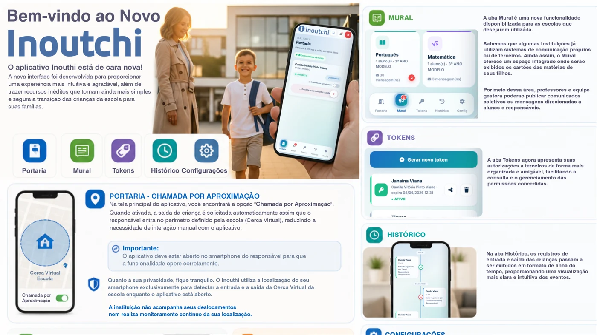

Vídeo
Conhecendo o ambiente do App
Navegando pelos principais recursos e funcionalidades do aplicativo.
O responsável chama o aluno pelo próprio celular, a sala recebe o aviso na TV e a escola guarda o histórico de quem retirou, quando e como. Funciona com os equipamentos que a escola já tem.
Prefere conversar? Chame no WhatsApp
Experimente o app Veja o aluno ser chamado na TV da sala. Simulador com dados fictícios.143
alunos acompanhados
1.658
saídas confirmadas
99,8%
das saídas confirmadas automaticamente
Do pedido no app até a criança
na companhia de quem a busca.
Ilustração com dados fictícios. O mapa serve só para explicar: o app mede a distância até a escola no próprio aparelho e envia apenas “dentro” ou “fora” da cerca; nenhuma posição é gravada.

Veja o responsável chamando o aluno pelo próprio celular e a sala recebendo o aviso na hora.
Quero esta soluçãoPilares que nenhum outro sistema escolar comum reúne em um só lugar.
Presença física obrigatória
O app confirma que o responsável está na escola antes de aceitar o pedido. Fora da cerca virtual, a solicitação é bloqueada. Como a localização é tratada: veja Privacidade e LGPD.
Chamada silenciosa e organizada
A TV da sala mostra o nome da criança com destaque e aviso sonoro só naquela sala, sem interromper as demais turmas. Sem microfones, rádios ou alto-falantes. No portão, um painel opcional mostra nome e sala.
Delegação segura com controle total
Familiares e amigos de confiança buscam a criança só com o token que o responsável gera, de uso único ou por período e ele é digitalmente conferido na portaria. O passo a passo está na animação acima.
Respaldo para a escola e para as famílias
Cada chamada e cada saída ficam registradas com horário, quem pediu e quem confirmou, e a entrada do aluno também. Escola e famílias consultam o histórico quando precisarem, com respaldo para qualquer questionamento.
Aproveita o leitor que você já tem
Escolas que já têm leitor facial compatível (Hikvision) podem integrá-lo ao Inoutchi, como mostra a animação acima. Quem não tem usa o Inoutchi do mesmo jeito, só com o celular.
A escola fala com todos em um só lugar
A escola publica avisos no app, para todos ou por turma, com anexos. Avisos urgentes chegam com notificação e a família confirma a leitura.
Veja como nos diferenciamos dos métodos tradicionais e das soluções mais comuns do mercado.
Processo manual
Base do mercado
Solução completa
Método de comunicação
Alto-falante
Alto-falante
Audiovisual em sala
Validação por GPS
Inexistente
Só aviso
GPS + Cerca Virtual
Delegação para terceiros
Não existe
Cadastro manual
Token + QR na portaria
Registro de cada ação
Sem controle
Parcial
Quem, quando e como
Gestão de transporte
Sem controle
Não possui
Sistema integrado
Login e proteção
Nenhuma
Login com senha
Senha, Google ou biometria
Comparação com as soluções mais comuns do mercado e com o processo manual, não com todas as soluções existentes. Critério da pontuação: ✓ vale 1 ponto, ~ vale meio ponto e ✕ vale zero.
Menos fila no portão, mais tranquilidade para quem cuida. Veja o Inoutchi funcionando na rotina da sua escola.
O Inoutchi nasceu da rotina de quem espera na portaria: dias de chuva, frio e vento, famílias disputando a atenção de quem atende e chamadas por microfone ou rádio ouvidas por toda a escola.
Foi pensado, desenvolvido e testado dentro de uma escola de verdade, em Florianópolis, junto com a equipe e as famílias. Cada recurso existe porque a rotina pediu.
— Tiarlei Noeremberg, fundador
Validado em escola piloto
Em operação com famílias e equipe reais, em Florianópolis.
App na Google Play
Aplicativo oficial para os responsáveis.
Checkin facial testado em campo
Leitor Hikvision no drive-thru externo e na confirmação da saída, validado em campo.
Chamada com o app fechado
Testada em aparelhos reais, com a tela apagada.
A Inoutchi não projeta sistemas. A Inoutchi projeta confiança.
Liberamos a equipe para fazer o que humanos fazem melhor: observar, acolher, proteger e garantir que cada criança chegue segura às mãos certas.
Quatro compromissos, em linguagem simples. A escola é a controladora dos dados; a Inoutchi é a operadora.
O app envia só a cerca e a distância, não a coordenada exata, e nenhuma posição é gravada no banco.
A escola é a controladora. A Inoutchi opera os dados conforme as instruções dela e em contrato.
Rotina escolar, segurança e comunicação com as famílias. Sem publicidade e sem venda ou compartilhamento comercial.
Dados de crianças seguem o art. 14 da LGPD. Ao excluir uma conta, os dados são anonimizados e o histórico escolar é preservado.
Um valor mensal por escola, que cresce só com o número de alunos.
Para escolas com até 200 alunos.
Acima disso, R$ 1,50 por aluno adicional ao mês.
Implantação com apoio da equipe e dos tutoriais.
* Implantação gratuita por tempo limitado.
Informe o número de alunos e veja o valor mensal e o que ele entrega.
Abrir o simuladorPara mais de 1.000 alunos, rede de escolas, SLA diferenciado ou integração com leitor facial, fazemos uma proposta sob medida. Fale com a gente.
Investimento mensal
por mês
Por ano
Por aluno ao mês
Os números mudam conforme o tamanho da escola.
Responsáveis conectados
com push e histórico dos filhos
Saídas registradas por mês
cada uma com horário e quem liberou
Registros por ano
saídas e entradas guardadas para auditoria
Horas da portaria por mês
que deixam de ser gastas chamando alunos
Ajuste para a realidade da sua escola.
Estimativas, não garantias. Calculadas com as médias da escola piloto: 0,4 saída e 0,65 entrada por aluno por dia letivo, 1,7 responsável por aluno, 22 dias letivos por mês e 200 por ano. O tempo da portaria é uma premissa sua.
Vídeos curtos e materiais em PDF organizados por categoria para você extrair o máximo do Inoutchi.
Navegando pelos principais recursos e funcionalidades do aplicativo.
Como o responsável solicita a saída do aluno pelo app.

Com a chave ligada, o pedido de saída e a confirmação acontecem automaticamente.
Nenhum tutorial encontrado nesta categoria.
A confirmação chega no seu celular, sem ligação e sem pergunta no portão. Confira como as famílias usam o aplicativo.
As dúvidas mais comuns de direções e famílias.
Não. O Inoutchi funciona com os celulares dos responsáveis, com as TVs, desktops e notebooks que a escola já tem nas salas. Leitor facial é opcional: quem já tem um leitor compatível pode integrá-lo.
O roteiro de implantação prevê o início da operação em até 72h após a assinatura: cadastro dos alunos e responsáveis, configuração das regras, treinamento da equipe e testes.
A escola é a controladora dos dados e a Inoutchi, a operadora. Os dados são usados só para a rotina escolar. A posição exata do responsável não é enviada ao servidor nem gravada: o app só informa se ele está dentro da área da escola. As políticas completas estão no rodapé do site.
Quem o responsável escolher. Ele gera um token para a pessoa, de uso único ou por período. Na chegada, a pessoa mostra um QR code ou o código na tela do celular e a portaria confere digitalmente antes de liberar o aluno.
O token possui criptografia e segurança de nível bancário. Além do que a portaria só libera o aluno depois da conferência digital. Se algo não bater, é recusado: o token é invalidado e o responsável recebe um aviso instantaneamente.
O Inoutchi funciona pela internet: a escola precisa de conexão e o responsável, de internet no celular. Recomendamos manter o procedimento de contingência da escola para quedas de conexão.
O aplicativo está na Google Play (Android). No iPhone, o responsável usa o Inoutchi pelo navegador; a chamada automática com o app fechado é um recurso do aplicativo Android. O app para iPhone está em desenvolvimento.
Assinatura mensal por escola: R$ 449 para até 200 alunos e R$ 1,50 por aluno adicional, no preço de lançamento para contratos assinados em 2027, com contrato de 12 meses.
Sim. Agende uma demonstração gratuita: mostramos o app, a sala e o painel da direção funcionando.
Preencha o formulário e nossa equipe mostrará como o Inoutchi pode transformar sua escola.
Prefere conversar agora? Chame no WhatsApp ou ligue para (48) 99932-7641.